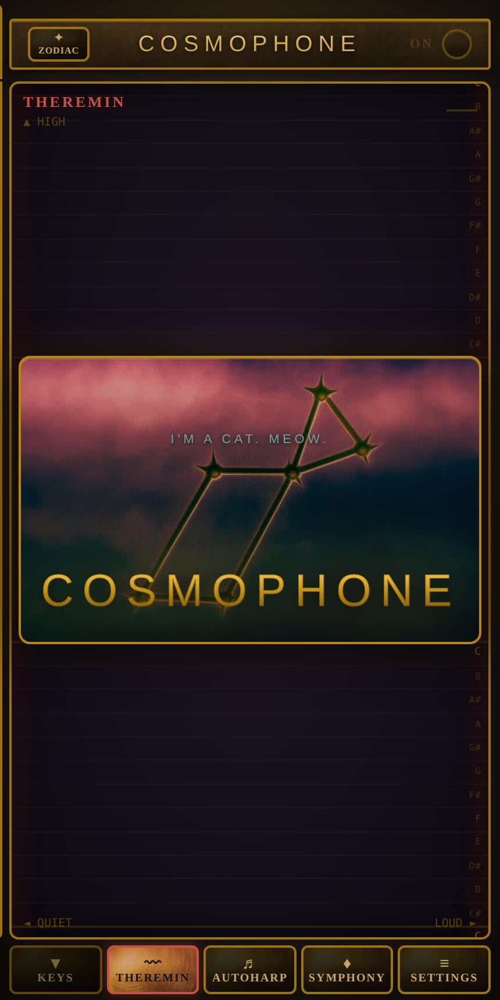
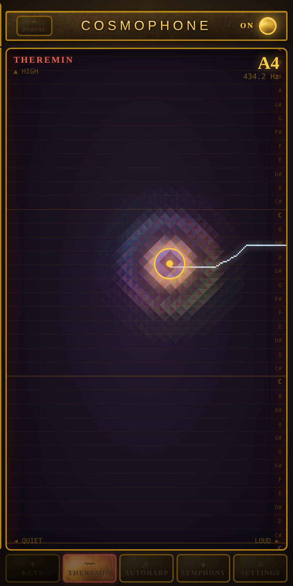
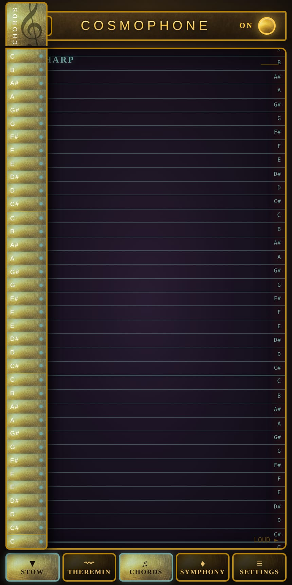
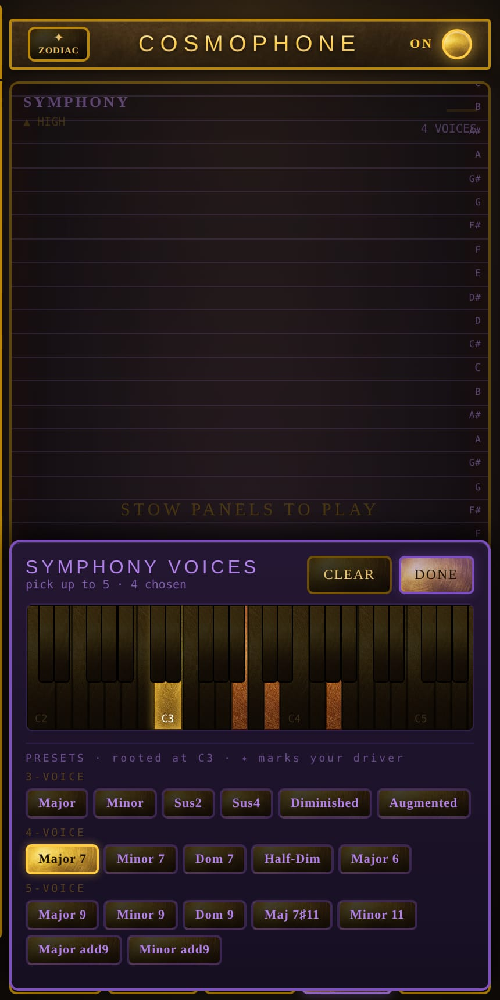
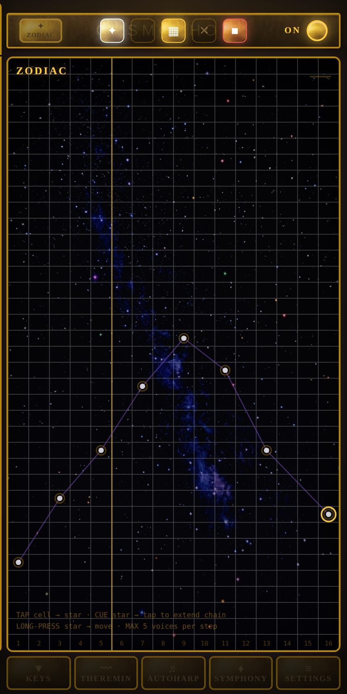
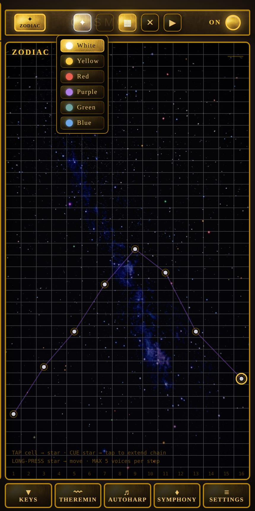
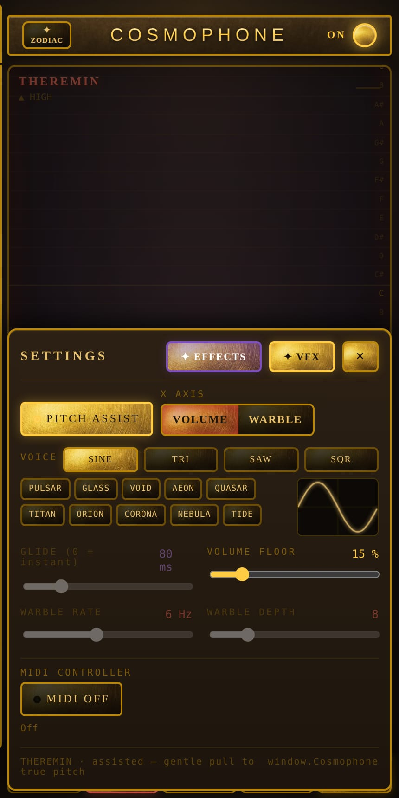
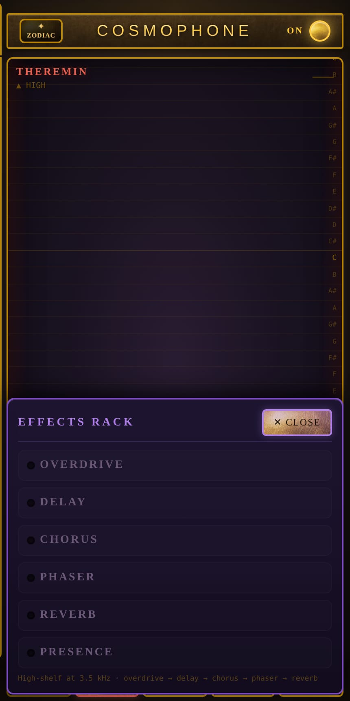
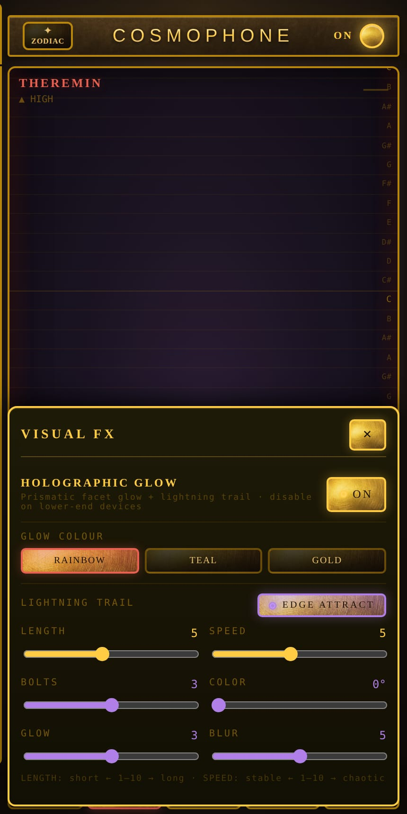

The faceplate
An instrument that fits in a browser tab
No install, no plugin, no audio interface. Cosmophone opens, warms up for three seconds behind a splash card, and waits for you to throw the power switch. It is built for a phone held in one hand — the play field runs the full height of the screen and every control sits under a thumb.
Three octaves, C3 to C6. Brass everywhere, because the whole thing is dressed as a piece of equipment that should have needed a cabinet, a mains lead, and a licence.
The splash card rotates through a different tagline every time it loads. There are eleven. Some are advice.
- A Modern Theremin for the Modern Luddite
- Thanks for the Aether
- You're Annoying Your Sister
- Now With Exactly the Same Amount of AI as Before
- Bela Lugosi Lives
Four ways to play
The same gesture, tuned four different ways
Every mode is driven by one finger on one surface. What changes is how much the instrument argues with you about where that finger landed.

Theremin
Nothing quantised, nothing snapped. Vertical is pitch, horizontal is either volume or warble depending on which you've assigned to the X axis. You are free to land between the notes and stay there, which is the entire point of a theremin and the entire reason they are difficult.
If you'd rather not be quite that free, pitch assist pulls you gently toward true pitch without ever snapping you to it. A dead zone at each edge pins the extremes, so you can park on silence or on full tilt without hunting for the corner. Note names run down the right margin and the readout calls out what you're on — A4 · 434.2 Hz — as you move.

Autoharp
The same drag, but every position lands on a note you've approved in advance. Slide out the key rail and switch semitones on and off by hand, or load something ready-made: major and minor scales, both pentatonics, the blues scale, and the usual family of chords — sevenths, diminished, augmented, sus4.
Glide decides how lazily the pitch walks from one approved note to the next, from an instant jump to a long smear. The rulings on the play field light up to show which notes are live, so you can see the shape of the scale you're playing inside.

Symphony
Choose up to five notes and they move as one shape under your finger. One of them is the driver, marked with a star, and the others hold their intervals against it as the whole chord slides up and down the field.
Two ways to keep it honest. Harmonic snaps only the driver to a real note and carries everyone else along at their original spacing, so the chord stays the chord. Experimental snaps every voice independently, which means the shape deforms as it travels and you get intervals you did not order. Eighteen presets ship with it, from plain Major up to Maj 7♯11.

Zodiac
You write the melody as a constellation
This is the one that has no real equivalent elsewhere. The play field becomes a night sky ruled into sixteen steps across and every semitone up. Tap an empty cell and a star appears. Tap the star to cue it, then tap again somewhere else and the two are joined by a line.
That line is not decoration. A chain of connected stars is a melodic thread, and the board loops as a three-second bar at 80 BPM with a playhead sweeping left to right. Time is the horizontal axis, pitch is the vertical one, so the shape you have drawn is quite literally the shape you hear. Threads can branch. Any single step can carry five voices and not one more — the instrument will refuse the sixth and tell you which step you overloaded.
Long-press a star to pick it up and move it. There is a grid overlay if you want the cells drawn in, and a delete mode for when the constellation gets away from you.

Six colours of star
Two of them currently change what happens. The rest are, for the moment, a filing system.
- Green — the pitch glides along the drawn line. Instead of stepping to the next note, the voice sweeps between them in a straight line and arrives exactly on the beat. What you drew is what you get.
- Purple — aura edges. Purely decorative lines that are never fed to the audio graph at all. You can hang them off a star to make the constellation look like something without changing a note of it.
- White — the default. Steps cleanly to the next note.
- Yellow, Red, Blue — reserved. They behave like white stars and wait.

The voice
Ten timbres, named a long time ago
Four oscillator shapes underneath — sine, triangle, saw, square — and ten voice presets layered over them. A small oscilloscope draws the waveform you have selected, and sliders for glide, volume floor and warble sit beneath it.
- Pulsar
- Glass
- Void
- Aeon
- Quasar
- Titan
- Orion
- Corona
- Nebula
- Tide
I named them myself, in a year I no longer have a number for. Pulsar was first. Pulsar is always first. Glass came after the winter I spent listening to the window, and I will not be taking questions about the window.
Void I do not discuss.
Aeon, Quasar, Titan, Orion — these four I built while the assistant was still with us, and each one is the sound of a thing considerably larger than the room it is in. Corona is warm. I have been assured, repeatedly and by people with no reason to lie, that Corona is warm. Nebula I built twice, having forgotten I had built it once. Both versions are in there. I cannot tell them apart and neither, I am confident, can you.
Tide came last. Tide will come last again.
Somewhere in the cabinet there is a slider marked WARBLE and beside it another marked DEPTH, and between the two of them lies the entire vibrato of my long and blameless career. Turn them. Turn them both, turn them all the way, I cannot stop you and I cannot hear the result, and that, in the end, was the arrangement I agreed to.

Signal chain
Six boxes, in an order that is not up for debate
Overdrive, then delay, then chorus, then phaser, then reverb. Presence sits outside the chain as a high shelf at 3.5 kHz. Each one has its own lamp and its own parameters, and each can be switched out entirely.
The order is the order. I fixed it before the war — one of them — and every attempt to reason with me about it has failed on the grounds that I am right.
Presence does something to the top of the sound that a colleague once described to me using only his hands. He is gone now. The gesture is in the notes but the notes are in a drawer and the drawer is in a house I sold.
I have kept this rack in working order for longer than several nations have existed. Every knob does exactly what its label says. I know this the way a man knows the contents of a letter he has sealed and never opened — completely, and without evidence.

Holographic glow
The part I can actually vouch for
Under your finger, the field breaks into prismatic diamond facets that catch the light like a holographic sticker — and they pulse, radiating outward from the touch point in slow rings. Meanwhile a bolt of chunky pixel lightning snaps between your fingertip and the nearest edge of the screen, redrawing itself into a new jagged path every few frames.
All of it is adjustable. Rainbow, teal or gold. Trail length and speed, how many bolts, their hue, their glow, their blur. Edge attract decides whether the lightning anchors to the border or drags along behind your finger. On an older phone you can switch the whole thing off and lose nothing but the spectacle.
Hardware
It will take a real keyboard, if you have one
Plug a MIDI controller into a desktop copy of Chrome or Edge and Cosmophone will pick it up by name. Keys play notes in Theremin, Autoharp and Symphony; velocity sets loudness; CC 7, 11 or 1 take over the expression axis in place of your thumb. In Zodiac, D3 starts the loop and E3 stops it. Touch and MIDI coexist — release the screen and any held keys carry on sounding.
Web MIDI is not available in Safari on iPhone, which is the one place Cosmophone otherwise feels most at home. The inventor has views on this.
They took the aether out. Do you understand what I am telling you. There was aether and they took it and they left a permissions prompt.
I built an instrument you play by not touching it and the great innovation of the age is a rectangle that must be touched. Fine. Marvellous. I have adapted. I adapt. I have been adapting since before your grandmother's grandmother was an idea her mother declined to have.
Somebody asks me what it sounds like. Every one of them, eventually, asks me what it sounds like, and I tell them what I told the last one and the one before that, which is that I have not heard a thing since the second war and I built all ten voices afterward, from memory, from the arithmetic, from the pictures the numbers make. Press it and find out. Press it and then come back and tell me. Nobody ever comes back and tells me.
| Range | C3 – C6 · three octaves |
|---|---|
| Polyphony | 5 voices maximum |
| Modes | Theremin · Autoharp · Symphony · Zodiac |
| Zodiac sequencer | 16 steps · 80 BPM · 3.0 second bar |
| Oscillators | 4 shapes · 10 named presets |
| Effects | 6 · fixed chain order |
| Chord library | 18 presets, 3 to 5 voices |
| Control | Touch, mouse, or Web MIDI |
| Installation | None. It is a web page. |
| Vacuum tubes | Not included |